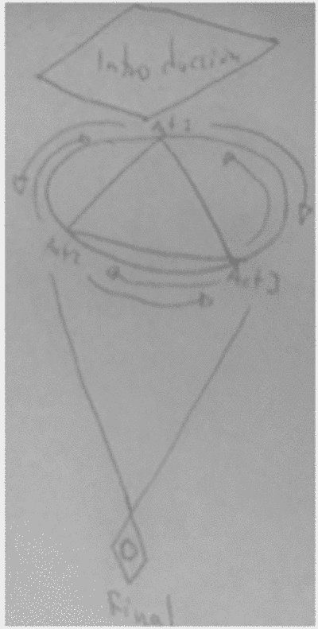

Introducción
El cine conlleva la idea de unión entre el punto de vista del escritor y director y demás involucrados en la visión y experiencia del visitante espectador. La forma en que el cine actual está hecho conlleva elaborar una serie de recursos ya expresados y exprimidos que, desde la producción más cara de Hollywood hasta el cortometraje independiente de un estudiante de audiovisuales, llevan como una marca de agua.
Lo anterior es referente a la experiencia audiovisual de por un momento olvidar que estamos en una sala de cine o en nuestra habitación frente al televisor y ser parte de la realidad que propone la pantalla. Olvidar por un momento nuestras propias vidas y problemas y tomarnos un descanso de ellas. Es realmente hermoso y fantástico vivir un momento en la Edad Media, sentir el espacio y universo como si fuéramos un astronauta.
Podemos encarnar cada una de las experiencias que el cine nos brinda y hacerlo formar parte de nosotros mismos. Cuando una película nos propone tener esa visión entonces pasa a formar parte de nosotros mismos, nos pertenece. Así como nos pertenece una pintura cuando la vemos, una pieza musical cuando la escuchamos o un personaje de teatro cuando nos identificamos. Y la palabra a resaltar es solo esa. Identidad. Perder la identidad con el cine es una práctica que aprendemos desde que somos niños, que nos maravilla y en algunos casos nos hace pensar sobre cómo se crea esa realidad.
Y si, un artista es creador de realidades. Un creador de forma de vida, de la resurrección misma de una idea ya conocida y quizás olvidada y quizás también de nuevas experiencias. Actualmente el cine nos muestra eso y para las personas que lo amamos no nos deja tranquilos las preguntas: ¿Cómo está hecha? ¿Por qué utilizaron este plano? ¿De donde partieron para crear esta realidad tan asombrosa? Y es en lo anterior donde las películas parecen cerrarse.
Donde son celosas y te exigen estudiarlas para que tú mismo descubras todos sus secretos más ocultos. Eso se logra con años de estudio, con años de dedicación y empatía con la formas, los símbolos, la estética y composición del lenguaje cinematográfico. Y aún así, pasan años y los directores más experimentados aún siguen descubriendo secretos nuevos y emocionándose.
¿Que ocurriría si una película se abriera? Si una película tuviera dentro de la misma diégesis la tesis misma de su creación y proceso? , ¿Si al entrar en la realidad el espectador fuera completamente consciente de la creación misma ?
Primera parte.
Mi trabajo cinematográfico va por ese camino. Donde sutilmente como una bella dama en un vestido largo de seda la película muestra sutilmente su pierna dejando al espectador mirar el color de sus medias más a detalle. Cada una de las escenas planeadas muestra y hace pensar claramente la forma que conlleva el símbolo. Sin dejar de lado a los estudiosos en la materia, demuestra que las formas la fotografía o películas el humano las lleva en su interior y que el lenguaje cinematográfico va de la mano y en conjunto con nuestro idioma natal.
Si imaginamos por un momento nuestra cabeza como una cámara de cine o fotografía podemos notar que tiene el mismo principio. Una cavidad sensible a la luz, un dispositivo de almacenamiento y una emoción y reacción por crear. Mencionaré dos ejemplos de mi trabajo en forma de ideas generales que intentan explicar las ideas aquí mencionadas.
Ejemplo 1: En “El fabuloso romance entre la fotógrafa sordomuda y el violinista ciego” podemos pensar en que se trata de un amor imposible. Entre dos personas que se enamoran sin poder verse o escucharse. La fotógrafa no puede escuchar ni elogiar al violinista y el violinista no puede ver el trabajo de la fotógrafa ni verla a ella. Lo que al uno le sobra al otro le falta. ¿Como es posible que dos personas con esas características se enamoren? Pueden tocarse, la fotógrafa puede verlo, quizás comunicándose en braille, pero la fotógrafa no necesita del braille para poder comunicarse.
El filme propone que el amor en esencia, no es un cuerpo, no es tocar, no es ver, no es hablar, propone que no existe cuerpo ni mente, propone que el amor es la esencia eterna con la que nacemos y lo que hace que otros muchos sentidos se disparen y sientan a alguien más. Ahora bien. ¿Como se llega a esa idea ? Cómo se llega al punto de elaborar una historia con esas características ? Cómo se coloca el proceso dentro de la realidad de la película ?
Ejemplo 2: Uno de mis trabajos consta en un gráfico abstracto que elaboré para explicarlo y se puede ver en este momento desde aquí:
Consta de tres capítulos, cada uno de ellos con un elemento de continuidad entre sí. La película se divide en tres partes. Instrucciones, capítulos (1, 2 y 3) y conclusión. En las instrucciones se da a conocer el gráfico y se explica que la película puede se vista en el orden que el espectador quiera, la película tiene sentido si se decide ver el capítulo 1 luego el 2 y luego el tres, y a la vez tiene sentido si el espectador decide ver el capítulo 3, luego el 1 y al final el 2.
En las conclusiones se da a conocer un epílogo de la filmación donde concuerda perfectamente con el final de cada capítulo y con el orden que el espectador le haya dado. En este punto el espectador es consciente en todo momento sobre cómo está hecha la película, es consciente del sentido que tiene y del epílogo en cada uno de los capítulos.
El espectador se sale de la realidad creada por el filme y comienza a verlo todo. Desde las butacas del cine, desde la lámpara que está en su cuarto y sobre todo desde el mismo punto de vista técnico y artístico del director y escritor.
Segunda parte
La conciencia que lleva el realizar este trabajo está basada en mis propia visión de las cosas. En qué el cine no solamente es para unas cuantas personas, en que el realizarlo y entenderlo conlleva el mismo esfuerzo como nos costó aprender nuestro idioma natal. Todos tenemos puntos de vista distintos. Y si bien, todos entendemos una película, una canción o una pintura, realmente nuestro trabajo estará influenciado por nuestros gustos, nuestra geografía, nuestras experiencias y nuestra imaginativa.
Y es en este punto donde se vuelve interesante la práctica humana del arte. En aprender de los puntos encontrados de distintos autores. El arte es un lenguaje universal y deberíamos saberlo expresar correctamente.
Tercera parte.
En este punto quiero dar a conocer mi propio punto de vista de lo que conlleva ser un artista o un creador. Para ello primero necesito hablar sobre los chamanes. Cuando una persona quiere convertirse en chamán tiene que pasar por diversos procesos, el más grande de todos es haber experimentado todo, ya sea por experiencias propias o por experiencias basadas en la alucinación a causa de alguna planta. Para ayudar a una persona que acude a un chamán por que su esposa murió, el chamán debe de saber lo que es vivir con el dolor de una esposa muerta y haberlo experimentado y sentido en carne propia.
Si una persona llega ante el chaman ahogada en la tristeza por haber pedido a un hijo, el chamán debe de saber lo que es perder a un hijo para poder ayudarla. El chamán dice “yo te entiendo, yo he vivido lo mismo que tú y a mi me funciono esto para continuar, lo que yo te propongo no es la verdad absoluta, solamente es una guía para que comiences a seguir tu propio camino en la sanación” Es en este punto donde el chamán se diferencia de los charlatanes.
Un charlatán tiene las respuestas y soluciones a todo, soluciones que no funcionan. Un chamán te da una guía y te empuja a dar el primer paso para encontrar tu propia solución. Tú tienes que hacer todo el trabajo. Un artista es similar, un artista debe ser un chamán. Imaginemos por un lado a dos directores de cine, ambos quieren que su primer película trate sobre el desamor, han estudiado sobre los planos y lenguaje cinematográfico, han visto películas y estudiado directores y se sienten preparados para llevar a cabo su empresa.
Lo que los diferencía, es que el primero ha visto películas sobre el desamor, sus padres siempre lo han querido y lo han apoyado en todo, realmente nunca ha tenido carencias graves, nunca ha tenido que trabajar y sus relaciones amorosas han sido un tanto inmaduras.
Por otro lado, el segundo director ha tenido que pagar el mismo sus estudios en cine, ha tenido que trabajar horas extras para comprar su cámara, ha apoyado a sus padres económicamente y ha pasado por tres relaciones amorosas de 3 años cada una donde ha experimentado el engaño, la desilusión, la depresión y tristeza.
Ahora bien. ¿Como imaginas la película del primer director a comparación con la el segundo? ¿ quien de los dos tiene un mensaje más claro ? ¿Cual película crees que refleje mejor la idea del desamor ? ¿Cual de ellos es el charlatán y cuál el chamán ? Un artista debe de ser un chamán, haber vivido y percibido las emociones de principio a fin de lo que quiere hablar y comunicar en su trabajo. Los charlatanes hablan sin tener nada que decir.
Conclusiones
Mi trabajo cinematográfico propone crear un estilo de visión y entendimiento de lo que es el cine respondiendo las peguntas aquí tratadas y colocando siempre a las ideas abiertas a nuevas formas en realización y estructura de la narración partiendo de la idea de que el lenguaje cinematográfico y/o artístico es humano y natural y que por lo tanto puede comprenderse si no se esconde. Dejar que una película deje de tratarse como una producción que deje de tratarse como un producto más en la canasta básica del entretenimiento y que pase a formar parte del propio entendimiento apoyado siempre por la creatividad.
Anexo
Propongo el siguiente decálogo a las personas que deseen comenzar con lo aquí propuesto, para anclar este trabajo con su propia visión y entendimiento cinematográfico:
Que la película nazca desde la pasión y amor por hacerla y que no nazca desde la ambición o amor por el dinero.
Que la película sea realizada por un mínimo número de personas.
Que la película sea escrita y dirigida por una única persona.
El guión no debe caer ni devaluarse ni mostrar algo que pueda ser entendido como “Deus Ex Machina”
La película debe tener un coste mínimo.
La película debe nacer desde la creatividad misma partiendo de la propia idea del creador sobre “original”, sabiendo que no siempre lo original es bueno y que lo bueno no siempre es original.
La construcción de la realidad o diégesis debe estar abierta y ser mostrado el proceso de creación de la misma sutilmente dentro de la narración.
La película debe tener elementos del cine de guerrilla. Por ejemplo, no se debe pagar por ocupar locaciones, si se desea utilizar una locación de coste excesivo para los realizadores ésta debe ser anulada o colocada en la filmación de manera creativa.
La narración basada en los tres actos y epílogo puede ser utilizada, sin embargo en algún momento se deben conocer las reglas para poder romperse.
El trabajo de cada integrante del equipo de filmación debe ser respetado y tener el mismo peso creativo que el de los demás integrantes. Sabiendo de antemano que deben estar convencidos de que están enteramente en la misma sincronía y realidad que el creador propone.
Gracias por leer
Por: Israel G. Bistrain 2018
Si lo deseas puedes seguirme en Mastodon:
@supersnufkin@mastodon.social